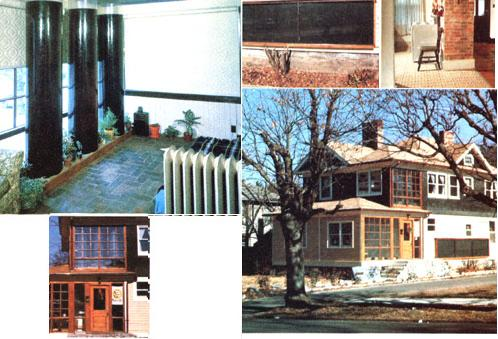
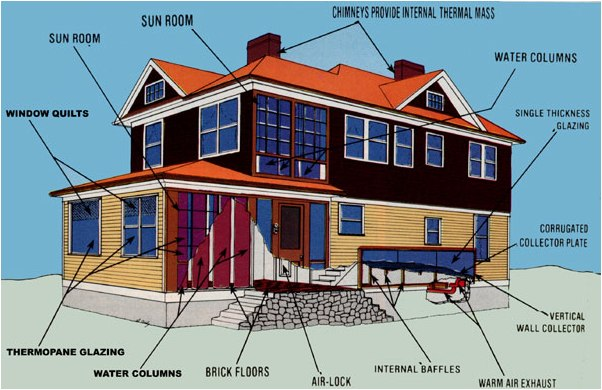

Issue # 62 - March/April 1980
Here's a sun-warmed home to inspire anyone who owns an expensive-to-heat conventional dwelling.
MOTHER has, over the past decade, featured a great number of sun-heated homes. And, although the specific designs of the structures have varied widely, most have reflected their builders' devotion to the passive solar concept.
Such "from the ground up" planning can - as we've seen - result in both efficient and beautiful dwellings. Many folks, however, already own conventional homes and - given the state of the economy - won't be likely to build new structures in the near future . . . although the same people may often wish that they could make their present houses more energy-selfsufficient.
Well, the home shown in the accompanying photos provides proof positive that a retrofitted solar house can be functional and strikingly attractive. But the dwelling - which is located in Asheville, North Carolina - hasn't always been such a treat to the eyes. In fact, just a short year ago, the building was in such a state of disrepair that it was on the brink of being condemned.
Fortunately, two fellows named Roger Sherman and Laurence Doxsey snatched the old place from the clutches of the city inspectors - in the spring of 1979 - for a mere $4,000. And better yet, the rescuers immediately set to work outlining a design program to transform the dilapidated home into an efficient solar structure that would blend in with the rest of the neighborhood (an area that has been designated as a National Historical Preservation District).
A REBORN BUILDING
A major part of the dwelling's "solarification" was accomplished by rebuilding - and enclosing - the home's upper and lower porches, which had been almost completely lost to decay. Roger and Laurence decided to use small thermopane windows, installed in "recycled" room dividers, to form the south glazing on the reconstructed sun rooms. (The choice of small windows, rather than large panes, helped the remodeled building fit in with its "classic" neighbors.)
It's estimated that the enclosed porches - coupled with a number of enlarged west-facing windows - have increased the dwelling's south- and westfacing glazed area by nearly 500%. And to take full advantage of the increased light, the builders installed a total of seven Kalwall Sunlite Tubes (three of them upstairs and four on the first floor, with a combined water storage capacity of 96 cubic feet) along the south walls of the two sun rooms.
The tubes were set in sand-filled leveling frames, and supported from beneath with wooden beams. Then, to enhance the heat-holding capability of the devices, the water contained in the tubes was dyed. (Although the decision to use a burgundy hue in the first floor's "aquariums" probably resulted in as much as a 15% loss in heat storage capability - as compared with that which black liquid could have provided - the designers feel the shortcoming is more than compensated for by the color's aesthetic appeal.)
As the sunlight filters through the cylinders, it warms the dyed water and a masonry floor as well. Material for the latter thermal mass area came from a pile of old street brick that was found on the property. In' both sun rooms - and inside the air-lock entryway - the brick flooring was first set on a dry bed of sand and concrete mix and then grouted in place.
While the increase in south- and westfacing window surface has obvious ad vantages, thesolar retrofitters had to take steps to limit the loss of sun heat - through the same glazing - at night or during cool, cloudy days. To accomplish that conservation, large pa rts of the glazed area were fitted with commercial Window Quilts (which have R values of 4.25), while all of the home's smaller windowed surfaces were sheathed with homemade Roman shades (providing an estimated R value of 5.0).
The presence of a south-wall stairwell - which provides access to the upstairs from the entry way - prevented the builders from using one portion of the structure to achieve a direct "windowed" solar gain. So, to avoid wasting the valuable southern exposure, they installed a hybrid system on the building's outer wall. Roger and Laurence decided on a 4' X 19' collector, which uses a serpentine baffle system to move air behind its 76 square feet of flat black corrugated collector plate.
Airflow through the unit is augmented by a thermostatically controlled 250-CFM fan, which draws warm air from the exhaust outlet and distributes it - by way of insulated Flexi-Duct-to the bedrooms located along the north wall of the first floor. Through judicious scrounging, the builders managed to keep the total cost of the collector to about $150 . . . including the single thickness glazing, which was purchased - for $5.00 per pane l - as seconds from a patio door manufacturer.
PRIOR PLANNING . . .
AND PLANNING AHEAD
While the retrofitted home was still in its design stages, a detailed cost/benefit analysis was run on each of the proposed systems. Among the intended additions that failed to stand up to careful evaluation was an active "propylene-glycol" hot water system. (The unit's $2,000 to $4,000 price tag simply wasn't justified when its efficiency was compared to that of the chosen homemade passive water heater . . . which hadn't yet been installed as of this writing but will be similar to that presented on page 99 of MOTHER NO. 34.)
However, though the propylene-glycol "heater" was scrapped from the home's design, the two planners wisely took advantage of an opportunity - during their remodeling - to run the plumbing for such a system. They expect the added effort to more than pay for itself a few years down the road . . . when developments in solar design may well make it cost-effective for them to install an active roofmounted collector!
HOW IT HANDLES HEAT
In order to assure adequate ventilation and air circulation during the summer months, most of the building's windows (with the exception of the small panels in the sun rooms) can be opened. The convective cooling is assisted by existing hedge-and-tree shading along the home's east and west walls . . . which - when the leaves are out - effectively controls the amount of sun striking those two walls in the morning and evening. And of course, as cool night air flows around the dwelling's added storage mass, the house "stockpiles" a source of daytime cooling.
The two builder s hope that, by 1981, they'll be able to install a cover for the 76square-foot collector. They've designed a combination reflectorshutter for the purpose . . . which will serve as attractive protection against vandalism and overheat ing. In its open position, the proposed cover will provide an estimated 30 to 40% increase in the insolating capabilities of the collector surface.
PROJECT COSTS AND FINANCING
The completed solar retrofit - as described in this article - cost Roger and Laurence a mere $3,000. Of course, the house was also in desperate need of repair (as indicated by its $4,000 purchase price), so approximately $36,000 more was spent on conventional renovations . . . including extensive structural repairs, new roofing and gutters, interior drywalling, application of insulation and caulking, exterior siding repair, appliances, floor covering and finishing, replacement of the lavatory fixtures, installation of anew (natural gas) backup heating system, and the replacement or upgrading of all the home's plumbing and electrical wiring.
At first glance, the house's total cost of about $43,000 (including purchase, repairs, and retrofit) might look pretty steep. However, when the completed dwelling is compared to a new, conventionally constructed building of around the same square footage, that figure probably represents a saving of at least 50%.
Furthermore, the owners learned that lending institutions were almost eager to finance their solar project. The interest may, the builders feel, be partly due to the availability of money through the Federal
National Mortgage Association . . . which has recently been instructed by the President to make mortgage loans available, through local banks, to help fund solar endeavors.
Roger and Laurence have two tips for any other folks who may want to finance solar structures, too: [1] If at all possible, work with an appraiser who knows enough about "sun" technology to understand what he or she is dealing with and be able to estimate the added value a solar energy system can bring to a dwelling . . . and [2] once you've estimated your cash requirements, ask for about 25% extra. If you don't need the additional cash, you won't have to use it or pay interest on it . . . but many people have underestimated their costs, and it's unpleasant to have a halfway finished structure and no money with which to complete the job.
PROVEN PERFORMANCE
"But," you may well wonder, "lust how much energy saving can result from the addition of water tubes, a wall collector, and window shades to an old house?" Well, initial calculations show that the retrofitted Asheville home's present solar accessories provide about 59% of the house's heating requirements . . . or - during the month of January - about 279,000 BTU per day.
By extrapolating such figures over one October-through-May heating period, we can see that - in terms of current fuel prices - the passive solar systems reduce annual heating costs by about $538. And, of course, it's likely that the costs of conventional fuels will continue to rise.
In fact, if we assume a conservative 10% yearly increase in fuel prices, the $3,000 solar retrofit project will have a payback period of just 7.5 years . . . after that, more than half of the home's heat will be absolutely free.
And the best part of Roger and Laurence's success story, of course, is that they created the lovely and efficient solar structure using what was available to them . . . their intimate knowledge of passive sun-power techniques, and an old home with a whole lot of character!
EDITOR'S NOTE: Roger Sherman and Laurence Doxsey own a firm - the Sunbright Company - that specializes in consulting and contracting for commercial and residential solar designs. For information on the services their organization offers - which include advising on passive, active, and hybrid solar installations - write the company (enclosing a stamped envelope and a dollar "thanks for your help" fee) at Dept. TMEN, Box 948, Asheville, North Carolina 28802 or P.O. Box 249, Ouray, Colorado 81427.
TIGHT THERMOS
Does the glass liner in your thermos bottle have a "tendency" to break? You won't have that problem anymore if - like Bill and Sandy Penny of Waynesboro, Virginia - you snugly pad the air space around that fragile inner cylinder with six to ten layers of paper towels.
|
 |
 |
|